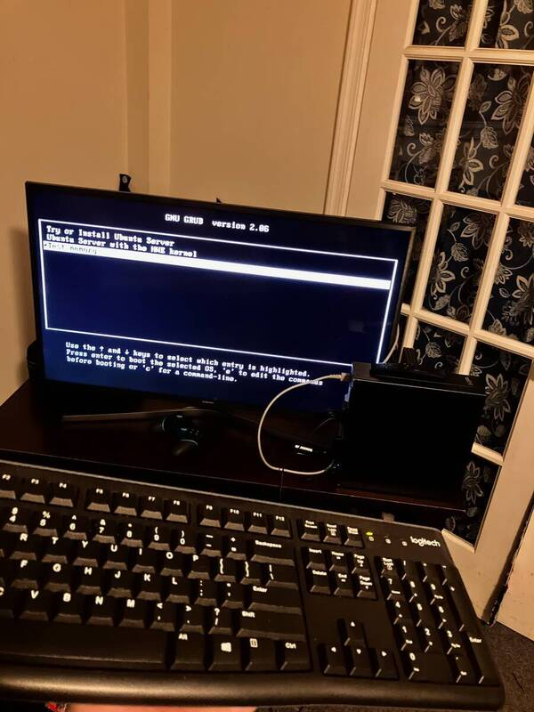

The Man Himself
A young, sharp mind with an insatiable knack for digesting and applying new concepts. I love tinkering, testing, improving, breaking, optimizing, theorizing, applying. Looking for internship opportunities to grow my limited in-field experience. I've recently begun conducting my own experiments to provide this experience myself. Or at least, I tell myself that's why. It's really just because I enjoy it. If you're interested in investing in a mind like mine, I'd be happy to connect and see what I can learn and accomplish in any position I'm offered.
His Work
I've taken initiative in my personal life to do things I normally wouldn't and to think like an engineer. I always exercise caution, of course, but I also always end up with results. It's been pretty self-serving stuff so far, like simpler apps for my phone or home networking, but it's taught me a great deal about a huge number of topics. If you're interested in reading more about these sorts of things I suggest using the button below.
